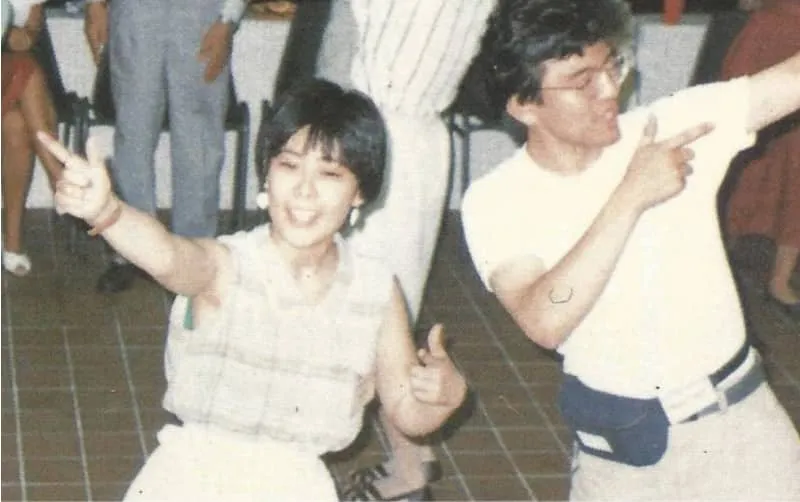
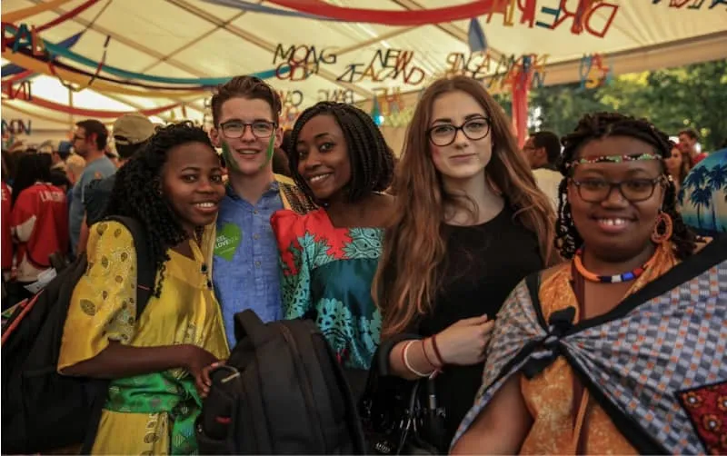
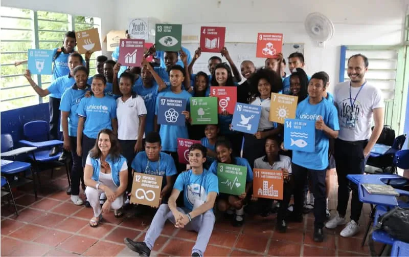
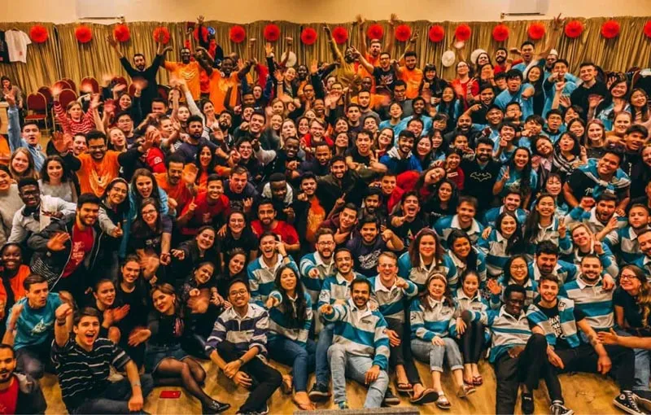
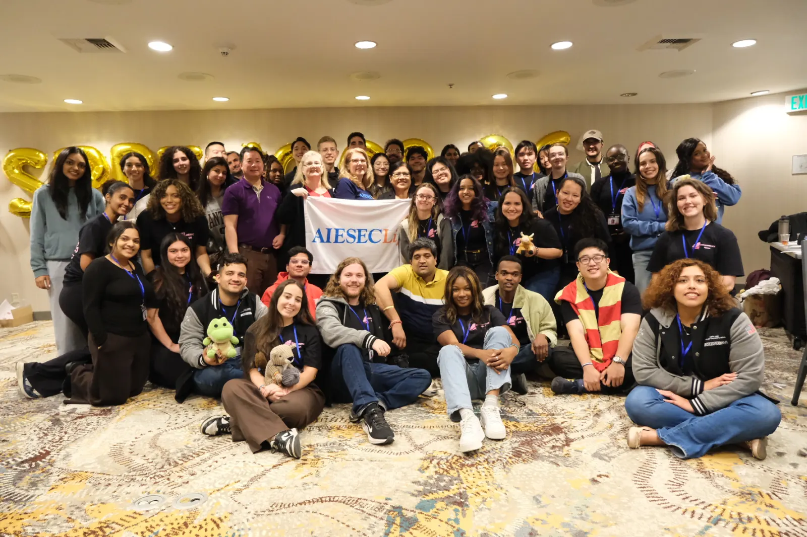
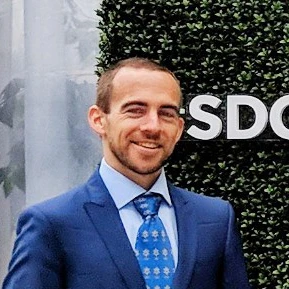
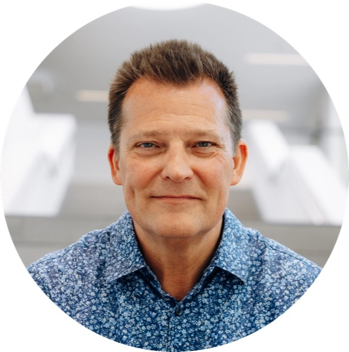
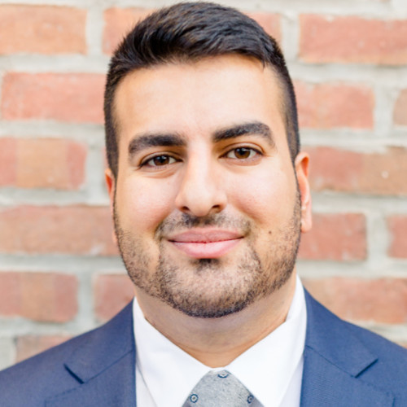

Celebrating 70 Years
AIESEC in the United States: 70th Anniversary
Seventy years of youth leadership across the United States. Swipe through the decades in the 70, then join us in Chicago to honor alumni, members, and partners who keep the movement growing.





1956Founded at Columbia University
Seven decades of impact
Years of AIESEC in the United States
Active AIESEC Members
Countries & Territories Worldwide
Alumni Worldwide
What to Expect
- Alumni Gala: A night of reconnecting with fellow AIESECers from across generations
- Celebration Ceremony: Honoring 70 years of youth leadership in the United States
- Networking: Meet current members, alumni, and partners
- Legacy stories: Hear from leaders who shaped AIESEC US over the decades
- Looking forward: Celebrate the next chapter of AIESEC in the United States
You Were Somebody's First Yes
Seventy years ago, AIESEC in the United States took a chance on young people.
The idea was simple: if students had the opportunity to live, work, volunteer, and lead in another country, they would come home with a broader perspective and the confidence to create positive change in their own communities.
That belief has shaped thousands of lives.
Maybe AIESEC gave you your first leadership role. Maybe it was your first international experience, your first team, or your first opportunity to discover what you were capable of. Whatever your story is, someone believed in you before you believed in yourself.
Now it's our turn to do the same.
As AIESEC in the United States celebrates 70 years, we're launching The 70 Campaign with one goal: raise $70,000 to make 70 exchange experiences possible for the next generation of young leaders.
Every donation helps a student say "yes" to an opportunity that could change their life forever.
If AIESEC has ever been part of your story, this is your chance to help write someone else's.
Give forward. Be someone's first yes.
Double your impact today. Ask your employer if they can match your contribution and amplify the difference you make.
AIESEC US Inc. is a 501(c)3 tax exempt, not for profit organization. Contributions to this organization are tax deductible to the full extent of the IRS laws.
Our Story
AIESEC's global story started in 1948. AIESEC in the United States was established in 1956 at Columbia University, and 70 years later, we're celebrating that legacy.
-
1948
AIESEC was established
AIESEC was established in 1948 after World War II, where seven youth across seven countries had a dream of building understanding between cultures and nations. They hoped to change the world, one person and one internship at a time.
-
1956
AIESEC in the United States was established
AIESEC in the United States was established in 1956 at Columbia University, bringing the global youth leadership movement to American campuses. From that founding moment, generations of students have developed into value driven leaders who create positive impact across the nation and the world.
-
1977
Spread across 6 continents
By 1977, AIESEC was present in 50 countries across six continents! To this date, over 40,000 young people around the world had participated in a leadership development experience, with AIESEC in the United States playing a vital role in that global growth.
-
2010
Over 10,000 experiences that year
In 2010, AIESEC crossed 10,000 experiences delivered in one year alone for the first time. By then, over 230,000 experiences had been provided, all facilitated by youth for youth. This was a milestone the United States chapter helped drive forward.
-
2015
Implementing the SDGs
In 2015, AIESEC's youth leaders from 126 countries and territories, in collaboration with the Office of the Secretary General's Envoy on Youth, gathered at the United Nations Headquarters to promote youth participation in implementing the Sustainable Development Goals (SDGs). The relevance and contribution of AIESEC, including in the United States, is clearer than ever.
-
2020
Youth leadership movement
AIESEC is a global network of people that simply believe youth leadership is not an option, but our responsibility. Across the United States, that belief continues to guide every local chapter, every exchange, and every leader we develop.
-
2026
Celebrating 70 years in the United States
Seventy years after AIESEC in the United States was established at Columbia University, we gather to celebrate the alumni, members, and partners who have built this legacy, and to look ahead to the next chapter of youth leadership in America.
Board of Directors
-

-

-

Event information
AIESEC US 70th Anniversary FAQ
Key facts about the AIESEC United States 70th Anniversary celebration in Chicago.
What is the AIESEC US 70th Anniversary?
The AIESEC United States 70th Anniversary marks seven decades since AIESEC in the United States was established in 1956 at Columbia University. The celebration brings together alumni, members, and partners.
When and where is the AIESEC US 70th Anniversary event?
The event is Saturday, October 17, 2026 at 7:00 PM CT at the InterContinental Chicago Magnificent Mile in Chicago, IL. Tickets are $150/person.
Who organizes the anniversary?
The celebration is organized by AIESEC United States Inc. (AIESEC US), a 501(c)(3) youth led nonprofit. It is distinct from other US nonprofit anniversary campaigns.
What is The 70 Campaign?
The 70 Campaign aims to raise $70,000 to make 70 exchange experiences possible for the next generation of young leaders across AIESEC in the United States.
Who can attend?
Alumni, current members, partners, and friends of AIESEC US are welcome. Registration and partner opportunities are shared on this page as they open.
How is AIESEC US different from other youth nonprofits celebrating anniversaries?
AIESEC US focuses on youth leadership through international volunteering, internships, teaching exchanges, and local chapter membership, connecting US youth to a global AIESEC network in 110+ countries, with US roots dating to 1956.
Continue the AIESEC US journey
Learn more about AIESEC United States, explore Global Volunteer, Global Talent, Global Teacher, or join a local chapter.
The 70 Campaign
Frequently Asked Questions
Don't see your question here?
Please contact donate@aiesecus.org or call (212) 757 3774, and we will be in touch to get started.
General Donation Questions
Are there any other ways I can support AIESEC United States?
Absolutely! You can still support us by spreading the word about our campaign to other AIESECers you know.
If you want to support AIESEC, please email donate@aiesecus.org with your name and contact information, and we will reach out to get started.
Is my donation tax deductible?
Yes! AIESEC United States is a registered 501(c)(3) nonprofit organization. All donations are tax deductible to the extent permitted by law. You will automatically receive a donation receipt by email.
Can I make a recurring donation?
Absolutely. You can choose to give monthly or annually. Recurring donations help us plan ahead and provide more sustainable support for the next generation of AIESEC leaders.
What will my donation be used for?
100% of your contribution supports The 70 Campaign, raising $70,000 to make 70 exchange experiences possible for the next generation of young leaders across AIESEC in the United States.
How are exchange experience recipients selected?
Members go through a competitive application and selection process. Support is awarded to those who demonstrate strong leadership potential, commitment to AIESEC's mission, and financial need.
What if I can't give money right now?
You can still support us by spreading the word and connecting us with companies and partners who might be interested in supporting youth leadership development.
What payment methods do you accept?
We accept credit/debit cards, PayPal, checks, ACH transfers, and employee matching gifts through corporate programs.
Corporate Partners
My company is interested in supporting AIESEC United States. Who do I contact?
AIESEC accepts grants, checks, in kind, and employee matching gifts from corporations that are aligned with our mission and values. Please email donate@aiesecus.org with your company name and contact information, and we will reach out to get started.
Can companies or organizations sponsor a full exchange experience?
Definitely. A company can directly sponsor one or multiple exchange experiences, and we will feature them as official supporters of The 70 Campaign and AIESEC US youth leadership programs.
Have another question?
I am not an AIESEC alumnus, but I am interested in supporting AIESEC United States. Who do I contact?
We welcome support from anyone who believes in youth leadership. Please email donate@aiesecus.org with your name and contact information, and we will reach out to get started.